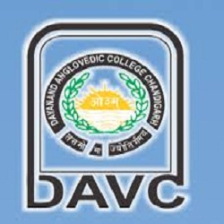
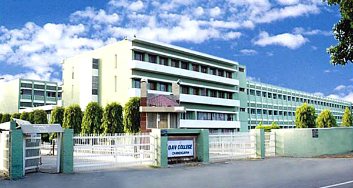

D.A.V. COLLEGE SECTOR -10 CHANDIGARH



Bio Science Department
The Division encompasses three major departments, four smaller Centres and three facilities and has on its rolls more than eighty faculty members and about 300 research scholars and post doctoral fellows. The scientists in the Division deal with almost all aspects of modern biology: molecular biology, structural biology, immunology, enzymology, reproductive and developmental biology, ecological and environmental studies and so on. The methods employed in these investigations include genetic engineering, immunological techniques, PCR, spectroscopy, X-ray Crystallography, electron-microscopy, bioinformatics and computer modelling.